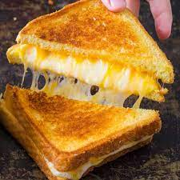

Grilled Cheese Sandwhich
Fresh bread toasted with gooey cheese
This is a classic simple snack and a great soup paring.
Ingridients
- bread
- 1 slice sharp cheddar cheese
- 1 slice colby jack
- butter
Steps
- butter outside slices of bread
- place both slices of cheese inside bread
- sautee over meadium high heat skillet for 93 seconds (or until golden brown) on each side